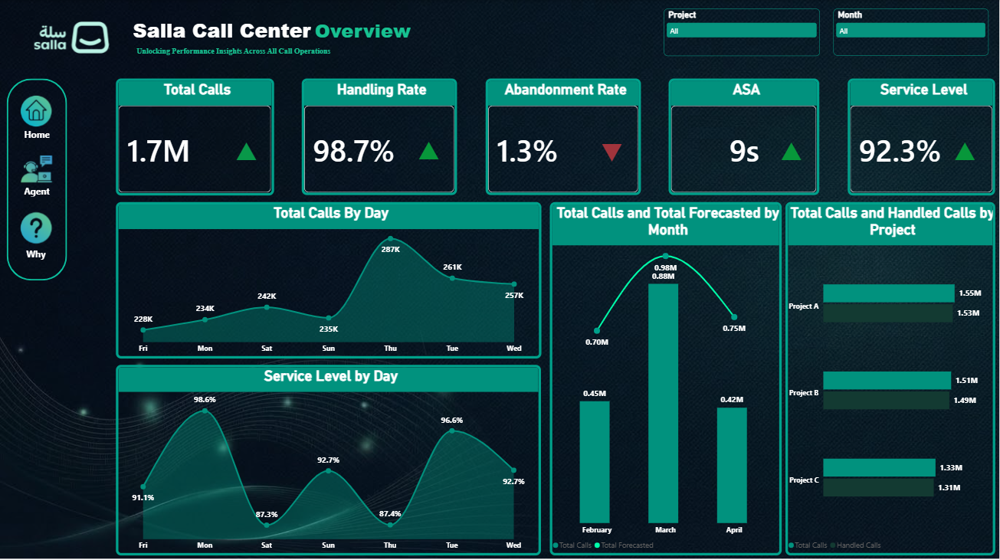
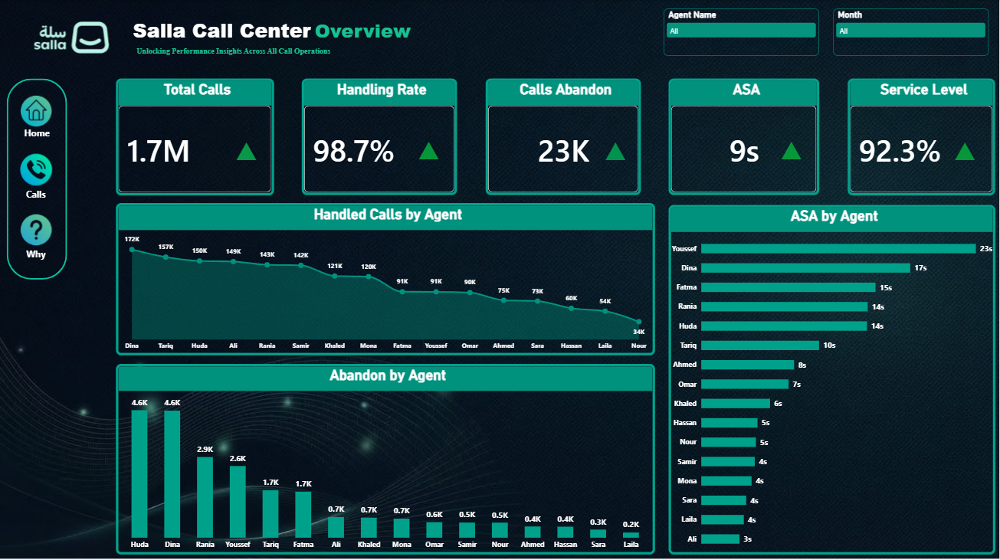
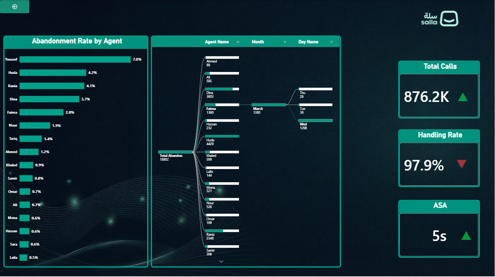

The Problem
Call-center managers need to understand when call demand is rising, whether calls are being answered within target, and which agents or contact reasons need attention. Looking at monthly totals alone makes it difficult to spot service bottlenecks and their causes.
The Solution
I built a four-page Power BI report with month, project, and agent filters. Monthly call tables are connected to shared Calendar and Agent tables, then shown through an overview, call trends, agent performance, and a root-cause page.
- Compare actual call volume with forecast and service targets.
- Find busy periods and agents with higher wait or abandonment measures.
- Use the decomposition tree to explore drivers by agent, month, and day.
Page 1
🏠
Home
Landing overview with headline KPIs — Total Calls, CSAT, and Avg Response Time — plus navigation buttons to each analytical page.
KPI Cards
Nav Buttons

Page 2
📞
Calls Analysis
Deep-dive into call volume trends — peak hours, daily & weekly patterns, inbound vs outbound breakdowns, and resolution rate tracking.
Line Chart
Bar Chart
Combo

Page 3
👥
Agent Analysis
Individual agent performance — call handling rate, average handle time, CSAT score per agent, and leaderboard-style ranking.
Agent Ranking
Combo
Trend

Page 4
🔍
Why (Root Cause)
Decomposition tree analysis of contact reasons — identifying top drivers behind customer calls to reduce repeat contacts and improve self-service.
Decomposition Tree
Bar Chart
Total Calls
Tracks call volume for the selected month, project, or other active filters.
Handling Rate
Shows the share of calls handled compared with the calls offered.
Abandonment Rate
Shows the share of offered calls that customers leave before an agent answers.
ASA
Average Speed of Answer: the average time a caller waits before an agent answers.
Service Level
Shows the share of calls answered within the report’s defined time threshold.
Handled Within Threshold
Counts calls answered within the service-level target.
Forecast vs. Actual
Compares forecasted and actual call volume by month to show where demand differs from plan.
Agent Performance
Compares handled calls, ASA, and abandoned calls by agent to help locate workload and service differences.
ASA Trend
Compares ASA with the prior month. An upward arrow means answer time increased; for ASA, lower is usually better.
Handled Calls & Total Abandon
Show the counts of calls answered by agents and calls abandoned before answer.
Difference Measures
Calls Diff, ASA Diff, Diff Handling, and Service Diff quantify changes against the report’s comparison period.
Trend Indicators
Calls, handling, service, and abandonment trend measures show direction of change. Whether an increase is good depends on the KPI.
Measure values change with the report filters. Handling Rate and Service Level use the definitions and threshold configured in this report.